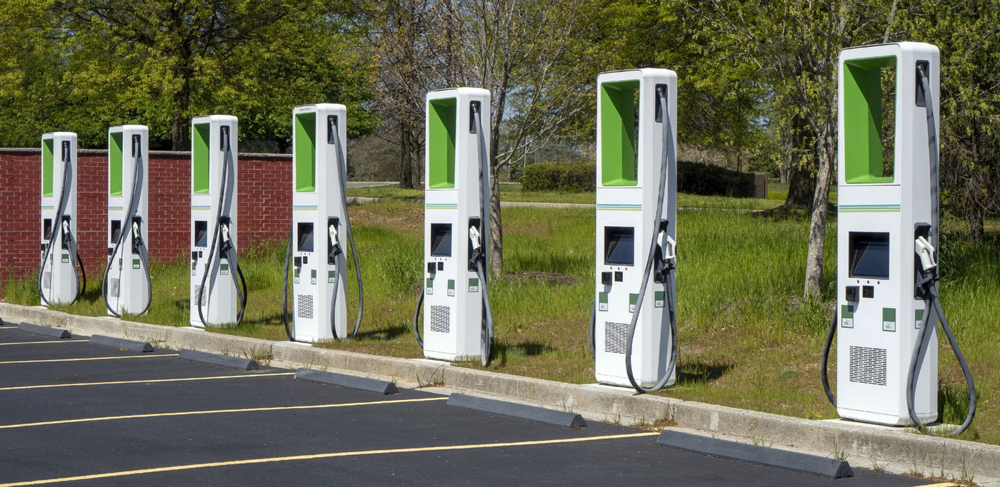

EV Resilience Webinars and Workshops

How do we ensure resilience and reliability for electric vehicles during natural disasters?
As electric vehicle adoption increases, local governments in coastal communities will need to plan for how to support the use of these vehicles during natural disasters. Upper Coastal Plain Council of Governments, NC Clean Energy Technology Center, and Applied Data Research Institute are partnering to promote planning for electric vehicle infrastructure resilience in the Upper Coastal Plain region of North Carolina.
The first part of this effort will be a webinar series to provide information regarding electric vehicle infrastructure and resilience during major storms. These webinars will use examples specific to Eastern North Carolina, but others outside the region may still find them relevant and are welcome to participate.
2023
This webinar will be an overview of the issues involved when planning for electric vehicle infrastructure resilience. The webinar will discuss supporting evacuations of electric vehicles, microgrids, improving the resilience of critical facilities, and supporting first responder fleets that use electric vehicles. Register here.
This webinar will be an overview of federal funding sources that can be used for improving the resilience of electric vehicle infrastructure. Register here.
2024
This free workshop is open to all and will be held at Nash Community College. The workshop will cover ongoing energy resilience research being conducted within the region. Attendees will learn about the project, provide feedback through collaborative activities, and be provided with mechanisms to stay involved with the work moving forward. Register here.
Article Last Updated: 05 January 2023